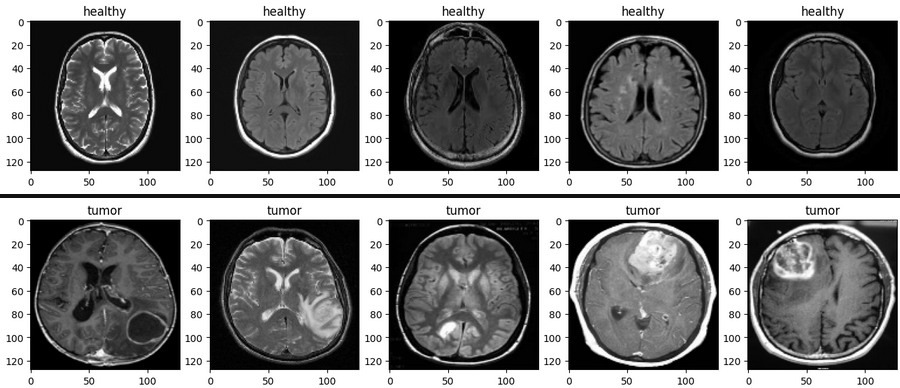
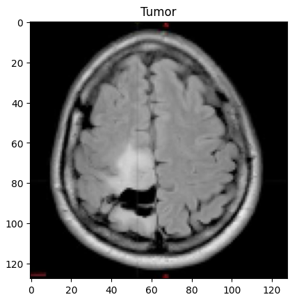
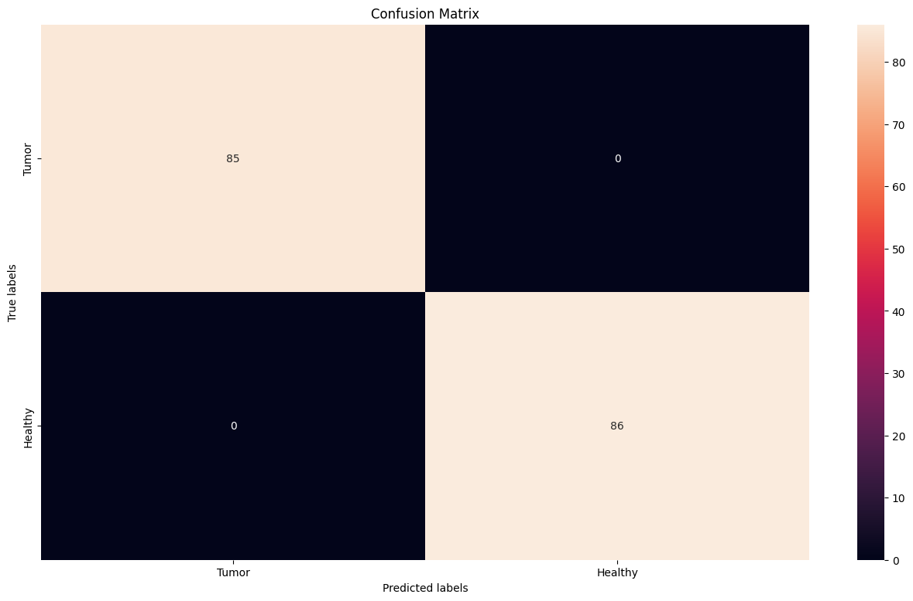
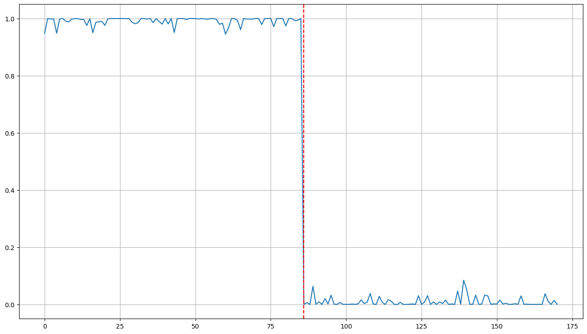

Brain tumor MRI classification
2023 · deep learning · healthcare · computer vision
A convolutional neural network (CNN) that looks at a brain MRI and says whether it shows a tumor. The idea is to speed up diagnosis and help plan treatment.
Contents
Dataset
Brain MRI images in two folders, with and without a tumor. I resize them to 128×128 and split them into training, validation and test sets.
Libraries
Python with PyTorch for the model, NumPy for the arrays, OpenCV to read and resize the images and Matplotlib for the plots.
Code walkthrough
1. Imports
import torch import numpy as np from torch.utils.data import Dataset, DataLoader, ConcatDataset import random import cv2 import sys import glob import matplotlib.pyplot as plt from sklearn.metrics import confusion_matrix, accuracy_score
2. Reading the images
Read every image from the dataset folder and resize it to 128×128:
# Loading and preprocessing tumor images # -resizing to 128x128 pixels to ensure consistency among all images # -color channels of the image are split into blue (b), green (g), and red (r) # -the channels are then merged back in the original order (since OpenCV loads images in BGR format) tumor = [] healthy = [] for f in glob.glob("./data/brain_tumor_dataset/yes/*.jpg"): img = cv2.imread(f) img = cv2.resize(img, (128, 128)) b, g, r = cv2.split(img) img = cv2.merge((b, g, r)) tumor.append(img) for f in glob.glob("./data/brain_tumor_dataset/no/*.jpg"): img = cv2.imread(f) img = cv2.resize(img, (128, 128)) b, g, r = cv2.split(img) img = cv2.merge((b, g, r)) healthy.append(img)
3. Arrays
Turn the lists into NumPy arrays:
#list to array healthy = np.array(healthy) tumor = np.array(tumor) #concatenate datasets All = np.concatenate((healthy, tumor)) healthy.shape
(85, 128, 128, 3)
4. A look at the data
A few random images from each class:
#Visualizing random samples of MRI images from two categories: healthy and tumor #For each sample is the random sample of healthy images, a random number between 0 and the length of the array def plot_random(healthy, tumor, num=5): healthy_imgs = healthy[np.random.choice(healthy.shape[0], num, replace=False)] tumor_imgs = tumor[np.random.choice(tumor.shape[0], num, replace=False)] plt.figure(figsize=(16,9)) for i in range(num): plt.subplot(1, num, i+1) plt.title('healthy') plt.imshow(healthy_imgs[i]) plt.figure(figsize=(16,9)) for i in range(num): plt.subplot(1, num, i+1) plt.title('tumor') plt.imshow(tumor_imgs[i]) plot_random(healthy, tumor)

Sample MRI images from the dataset. Top row: healthy brain scans. Bottom row: brain scans with tumors.
5. Dataset class
A PyTorch Dataset for the MRI data:
class MRI(Dataset): """An abstract class representing a Dataset. All other datasets should subclass it. All subclasses should override ``__len__``, that provides the size of the dataset, and ``__getitem__``, that supports integer indexing in range from 0 to len(self) exclusive. The base class raises a NotImplementedError, indicating that they must implement function on instances of the class or its subclasses. """ def __init__(self): # Initialize lists self.tumor = [] self.healthy = [] # Load tumor images for f in glob.glob("./data/brain_tumor_dataset/yes/*.jpg"): img = cv2.imread(f) img = cv2.resize(img, (128, 128)) b, g, r = cv2.split(img) img = cv2.merge((b, g, r)) self.tumor.append(img) # Load healthy images for f in glob.glob("./data/brain_tumor_dataset/no/*.jpg"): img = cv2.imread(f) img = cv2.resize(img, (128, 128)) b, g, r = cv2.split(img) img = cv2.merge((b, g, r)) self.healthy.append(img) # Convert to numpy arrays self.tumor = np.array(self.tumor).astype(np.float32) self.healthy = np.array(self.healthy).astype(np.float32) # Labels self.tumor_label = np.ones(self.tumor.shape[0]) self.healthy_label = np.zeros(self.healthy.shape[0]) # Concatenate self.images = np.concatenate((self.tumor, self.healthy), axis=0) self.labels = np.concatenate((self.tumor_label, self.healthy_label)) # Returns the number of images in the dataset by accessing the shape of the self.images array def __len__(self): return self.images.shape[0] # Returns a dictionary with two keys - 'image' for the image at the specified index and 'label' for its corresponding label def __getitem__(self, index): sample = {'image': self.images[index], 'label': self.labels[index]} return sample # Divides each pixel value by 255 to scale the image pixel values to the range [0, 1] def normalize(self): self.images = self.images/255.0
6. DataLoader
Normalize the dataset and wrap it in a DataLoader:
mri_dataset = MRI() mri_dataset.normalize() # For our dataset dataloader = DataLoader(mri_dataset, shuffle=True) for i, sample in enumerate(dataloader): img = sample['image'][0] plt.title(f"Tumor" if sample['label'][0] else "Healthy") plt.imshow(img) break

One scan coming out of the DataLoader.
7. The CNN
import torch.nn as nn import torch.nn.functional as F class CNN(nn.Module): def __init__(self): super(CNN, self).__init__() self.conv1 = nn.Conv2d(in_channels=3, out_channels=16, kernel_size=3) self.conv2 = nn.Conv2d(in_channels=16, out_channels=32, kernel_size=3) self.conv3 = nn.Conv2d(in_channels=32, out_channels=64, kernel_size=3) self.pool = nn.MaxPool2d(kernel_size=2, stride=2) self.fc1 = nn.Linear(in_features=64*14*14, out_features=128) self.fc2 = nn.Linear(in_features=128, out_features=64) self.fc3 = nn.Linear(in_features=64, out_features=1) def forward(self, x): self.cnn_model = x x = self.pool(F.relu(self.conv1(x))) x = self.pool(F.relu(self.conv2(x))) x = self.pool(F.relu(self.conv3(x))) x = x.view(-1, 64*14*14) x = F.sigmoid(x) return x
8. Training
lr = 0.0001
EPOCH = 300
device = torch.device('cuda' if torch.cuda.is_available() else 'cpu')
model = CNN().to(device)
optimizer = torch.optim.Adam(model.parameters(), lr=lr)
dataloader = DataLoader(mri_dataset, batch_size=32, shuffle=True)
for epoch in range(1, EPOCH):
losses = []
for i, data in enumerate(dataloader):
optimizer.zero_grad()
imgs = data['image'].to(device)
labels = data['label'].to(device)
y_hat = model(imgs)
error = nn.BCELoss()
y_hat = y_hat.squeeze() # removes dimensions of size 1
labels = labels.float()
loss = error(y_hat, labels)
loss.backward()
optimizer.step()
losses.append(loss.item())
if epoch % 5 == 0:
print(f"Train Epoch: {epoch} \tLoss: {np.mean(losses)}")
Train Epoch: 5 Loss: 0.698204
Train Epoch: 10 Loss: 0.694091
Train Epoch: 15 Loss: 0.686686
...
Train Epoch: 295 Loss: 0.016101
Train Epoch: 300 Loss: 0.015598
9. Evaluation
Run the trained model over the test set:
model.eval() dataloader = DataLoader(mri_dataset, batch_size=32, shuffle=False) outputs = [] y_true = [] with torch.no_grad(): # context manager is used to disable gradient calculation, reducing memory consumption and speed for i, dataloader in enumerate(dataloader): imgs = dataloader['image'].to(device) label = dataloader['label'].to(device) y_hat = model(imgs) outputs.append(y_hat.cpu().detach().numpy()) y_true.append(label.cpu().detach().numpy()) outputs = np.concatenate(outputs, axis=0) y_true = np.concatenate(y_true, axis=0)
Accuracy:
accuracy_score(y_true, threshold(outputs))
1.0
Confusion matrix:
cm = confusion_matrix(y_true, threshold(outputs))
plt.figure(figsize=(10,7))
sns.heatmap(cm, annot=True, fmt='g', ax=ax)
# labels, title and ticks
ax.set_xlabel('Predicted labels')
ax.set_ylabel('True labels')
ax.set_title('Confusion Matrix', fontsize=20)
ax.xaxis.set_ticklabels(['Healthy', 'Tumor'])
ax.yaxis.set_ticklabels(['Tumor', 'Healthy'])

No scan is misclassified.
The model's output for each scan:
plt.figure(figsize=(16,9)) plt.plot(outputs) plt.axvline(x=len(tumor), color='r', linestyle='--') plt.grid()

Close to 1 means tumor, close to 0 means healthy.
Conclusion
The CNN got every test scan right. The dataset is small, though, so I wouldn't read much into that 1.0 until it is tested on more and more varied scans.
What I would try next:
- more varied cases in the dataset
- bigger architectures such as ResNet or EfficientNet
- segmentation to outline the tumor
- a test in a real clinical setting